一个固定候选；仅补真实同日同产品10m外沿和原20m SCL，路径规则与原扣量均不变。没有叠加halo donor方法。变化代表算法对空间上下文的响应，不是像元PM真值验证。
全窗与边界数值 · 实际路径及谱形相似度 · 结果说明 · 全部13个变化像元
有效原像元10197；实际变化6格；PM差范围[-0.0285, 0.1896]，全窗均值差0.000022。目标点路径选项1 → 1；guard 0 → 0。内部>40m最大差0。
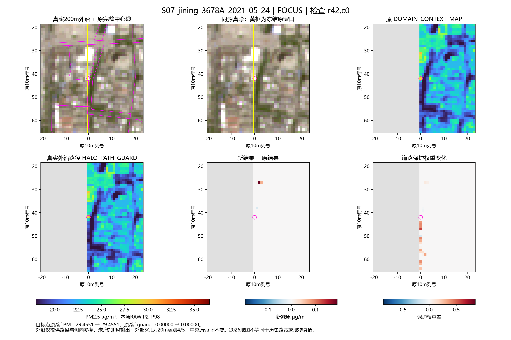
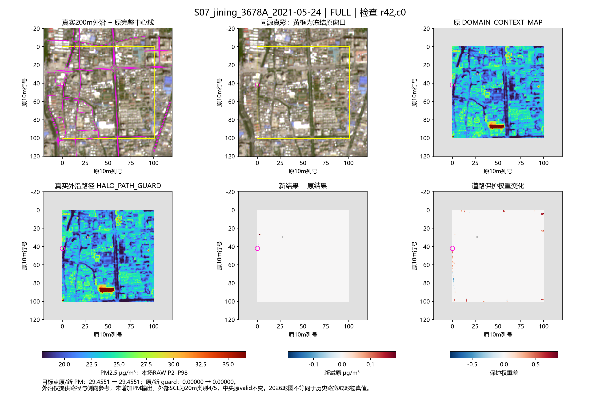
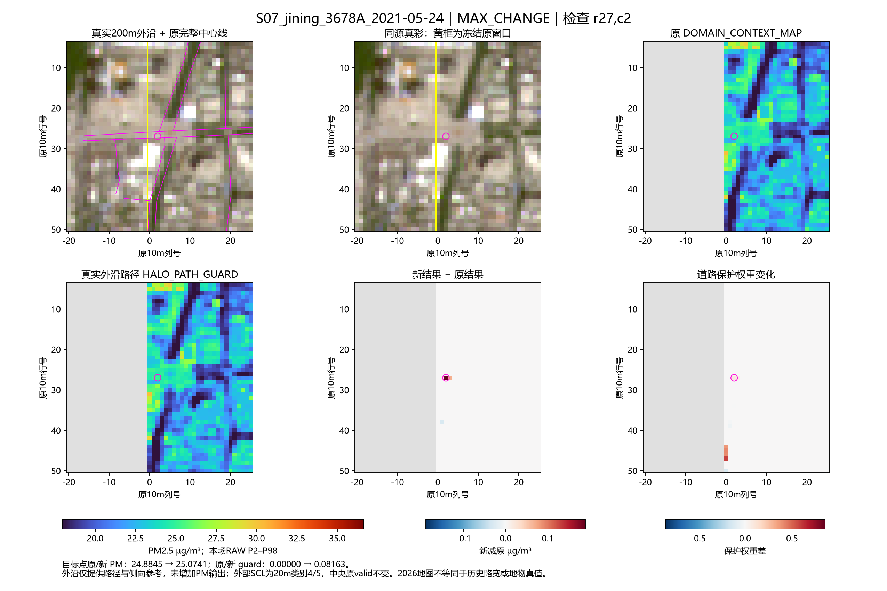
有效原像元10201；实际变化2格；PM差范围[0.0000, 0.0521]，全窗均值差0.000005。目标点路径选项0 → 0；guard 0 → 0。内部>40m最大差0。
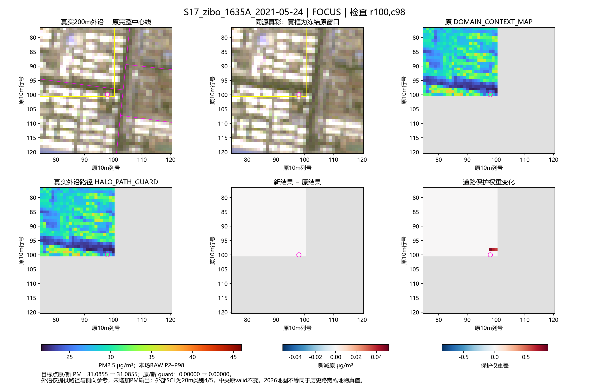
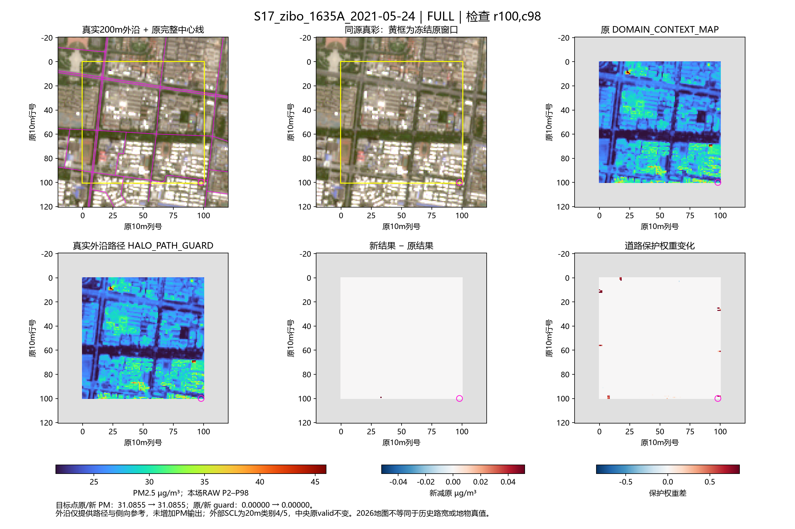
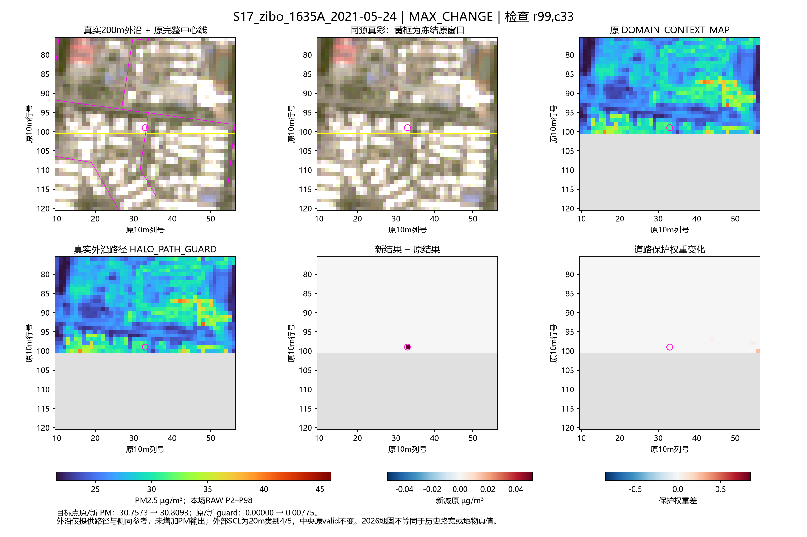
有效原像元10200；实际变化3格；PM差范围[0.0000, 0.8714]，全窗均值差0.000107。目标点路径选项0 → 1；guard 0 → 0。内部>40m最大差0。
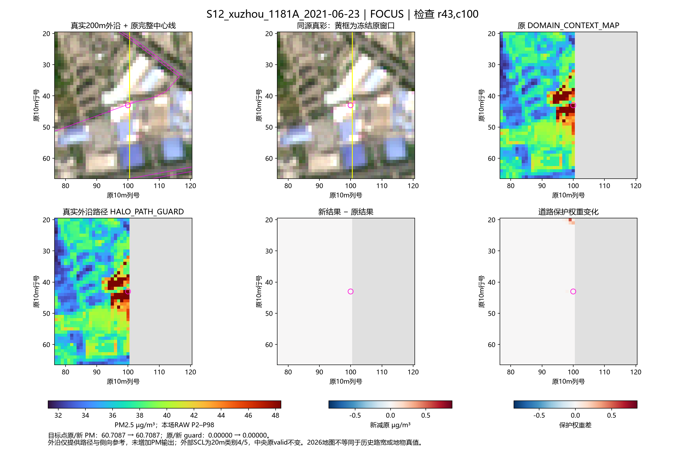
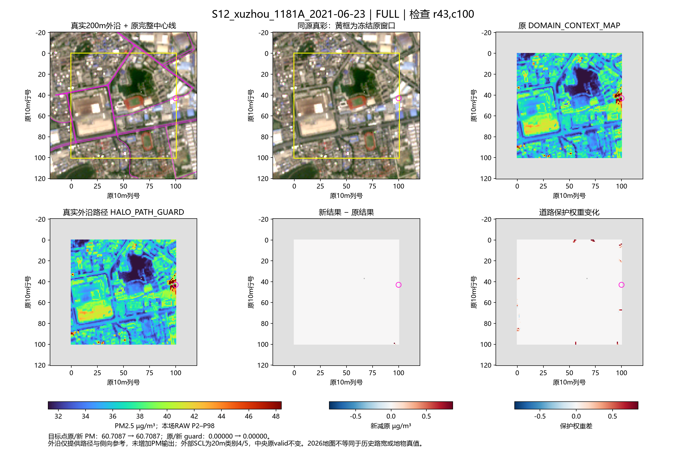
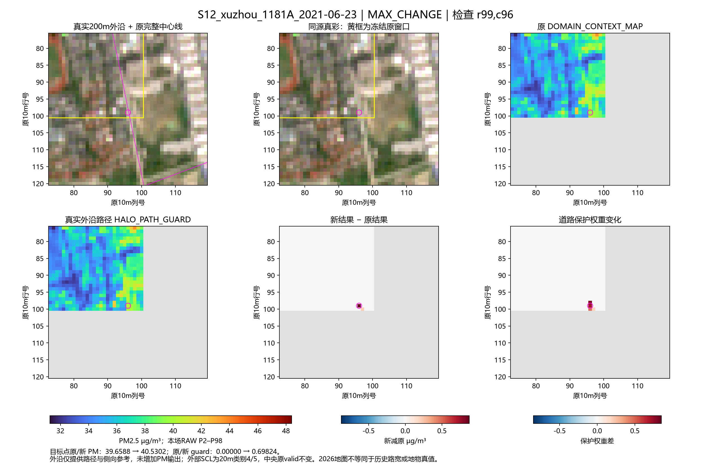
有效原像元10197；实际变化2格；PM差范围[-0.0139, 0.0047]，全窗均值差-0.000001。目标点路径选项0 → 1；guard 0 → 0。内部>40m最大差0。
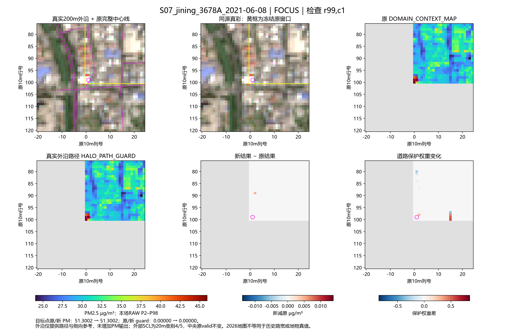
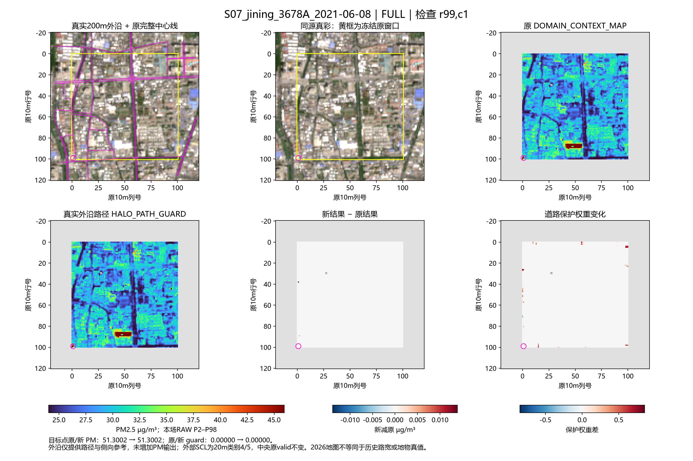
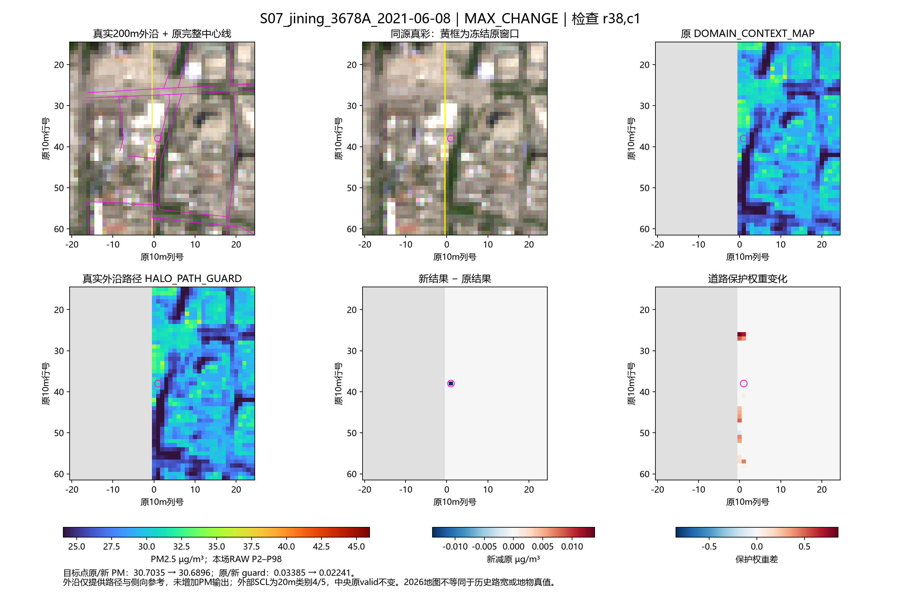